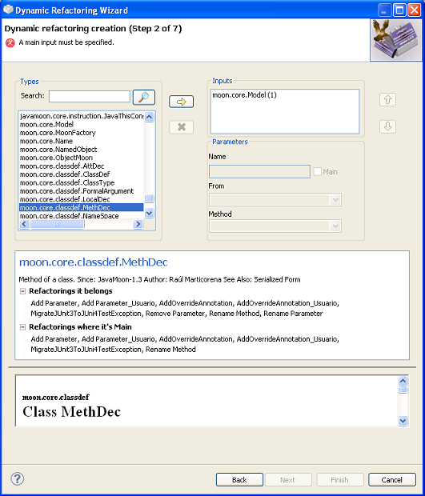
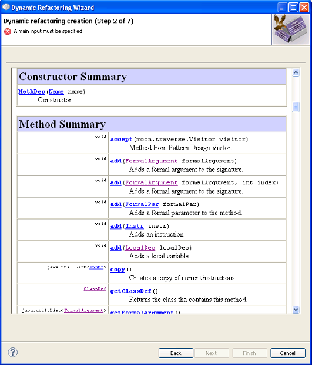
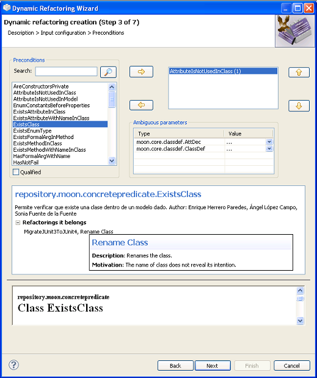

Crear RefactorizacionesCrear Refactorizaciones
Crear RefactorizacionesCrear Refactorizaciones
Opci�n "Nueva Refactorizaci�n..."
Se iniciar� un asistente que le guiar� a trav�s de todo el proceso de creaci�n de una nueva
refactorizaci�n.
Se explicar�n a continuaci�n cada uno de los cinco pasos que componen el asistente. Puede cancelar el
proceso de creaci�n en cualquier momento, as� como retroceder a cualquiera de los pasos previos o avanzar
al paso siguiente (una vez que todos los datos necesarios han sido completados).
Primer paso: "Crear una nueva refactorizaci�n"
Nombre:
Introduzca el nombre de la refactorizaci�n en este campo. El valor introducido se utilizar� para
indentificar la refactorizaci�n en las ventanas de selecci�n de refactorizaciones. Se pueden utilizar
espacios en blanco, y es sensible al uso de may�sculas. Si est� utilizando Java 1.6 el nombre puede
contener algunos caracteres especiales como tildes o el car�cter '�'. En cualquier caso,
no se recomienda, y no se deben utilizar si se est� trabajando con Java 1.5 o versiones anteriores.
Se debe completar este campo antes de poder continuar.
Descripci�n: Introduzca en este campo una breve descripci�n de lo que hace la refactorizaci�n y por qué. Puede ocupar tantas l�neas como sea necesario. Este campo tambi�n debe ser completado antes de continuar.
Imagen: Puede especificar aqué la imagen que quiere asociar
a la refactorizaci�n. Pulsando el bot�n con el texto "..." podr� seleccionar el fichero
con la imagen. Este campo no es obligatorio.
El tama�o ideal de la imagen deber�a ser de unos 450 x 200 p�xeles. Aunque se pueden utilizar im�genes m�s grandes, no se mostrar�n completamente en las ventanas de la interfaz. Los formatos de imagen aceptados son:
GIF,JPG,TIFFyPNG.
Motivaci�n: Debe proporcionar una breve explicaci�n de la motivaci�n que podr�a conducir a aplicar la refactorizaci�n. Este campo es tambi�n obligarorio.
Palabras clave: Debe proporcionar una lista de palabras clave descriptivas de la refactorizaci�n. Este campo no es obligarorio pero ayuda en la clasificaci�n de las refactorizaciones en la vista del cat�logo.
Categor�as: Debe asignarse las categor�as a las que la refactorizaci�n pertenece por cada clasificaci�n existente. No es obligatorio asignar una categor�a para cada clasificaci�n pero s� es obligatorio asignar al menos una categor�a para la clasificaci�n de �mbito (Scope) y debe coincidir con el �mbito de la que ser� la entrada principal de la refactorizaci�n.

Segundo paso: "Configuraci�n de entradas"
La lista de la derecha (Entradas) muestra las entradas que ya se han seleccionado para la
refactorizaci�n.
La lista de tipos disponibles para las nuevas entradas aparece a la izquierda (Tipos).
Si quiere a�adir una o m�s entradas a la lista de la derecha, seleccione los tipos de declaraci�n que
quiere que tengan, y pulse el bot�n con la flecha apuntando hacia la derecha
( ). Si necesita varias entradas con el mismo tipo,
podr� repetir la operaci�n tantas veces como sea necesario.
). Si necesita varias entradas con el mismo tipo,
podr� repetir la operaci�n tantas veces como sea necesario.
Para eliminar la entrada o las entradas seleccionadas de la lista de Entradas, pulse
el bot�n con el s�mbolo del aspa ( ).
).
Tambi�n puede reordenar las entradas mediante los botones con las flechas apuntando hacia arriba y hacia
abajo ( y
y  ).
El orden que tengan cuando se cree la refactorizaci�n se mantendr� en todo el plugin y su interfaz.
).
El orden que tengan cuando se cree la refactorizaci�n se mantendr� en todo el plugin y su interfaz.
Para cada entrada que a�ada, podr�a tener que completar los siguientes campos:
Nombre: el nombre que se utilizar� para identificar la entrada m�s adelante en el asistente. Tambi�n se usar� como etiqueta en la ventana de refactorizaci�n empleada para la introducci�n de los valores reales de cada entrada. El nombre puede contener tildes pero no espacios en blanco, y debe completarse para todas las entradas.
Ra�s: utilice esta casilla de verificaci�n para indicar cu�l de todas las entradas debe utilizarse como entrada principal de la refactorizaci�n. Solo se puede seleccionar una entrada principal y debe tener uno de los tipos especificados. Una vez que la refactorizaci�n se ha construido y se est� utilizando, la entrada principal ser� aquélla que el usuario pueda seleccionar en un editor Java o en un �rbol de selecci�n de una vista en Eclipse.
Desde: si el valor o posibles valores asignados a la entrada acutal se deben obtener a partir de otra, debe especificarlo mediante este desplegable. Si el usuario debe introducir el valor de la entrada manualmente, deje este campo vac�o.
M�todo: una vez que se ha seleccionado un valor desde
para una entrada, este desplegable mostrar� los m�todos disponibles que devuelven, bien una colecci�n de
valores, bien un valor de un tipo asignable a la entrada seleccionada.
Antes de poder continuar al siguiente paso, se comprueban algunas restricciones que deben cumplirse:
Debe haberse seleccionado exactamente una entrada ra�z o principal.
La entrada principal debe tener uno de los tipos
moon.core.classdef.ClassDef, moon.core.classdef.MethDec,
moon.core.classdef.AttDec, moon.core.classdef.FormalArgument
o moon.core.genericity.FormalPar o un subtipo de cualquiera de ellos.
Todas las entradas deben tener un nombre �nico.
Si se ha especificado un valor Desde para alguna entrada,
se deber� seleccionar un valor para M�todo tambi�n.
Dentro de la interfaz de este paso tambi�n aparece un campo de texto que permite realizar una b�squeda sobre
la lista de tipos (Types).
Para ello se tiene que pulsar el
bot�n  . La b�squeda se ha mejorado notablemente
permitiendo una notable flexibilidad gracias a la biblioteca Apache Lucene. El conjunto de operadores
que dicha biblioteca permite aparecen explicados en la siguiente p�gina
(
http://lucene.apache.org/java/2_4_0/queryparsersyntax.html).
Adem�s ahora la b�squeda tambi�n se realiza sobre la descripci�n del tipo y devuelve
resultados priorizados lo que hace las b�squedas m�s significativas.
. La b�squeda se ha mejorado notablemente
permitiendo una notable flexibilidad gracias a la biblioteca Apache Lucene. El conjunto de operadores
que dicha biblioteca permite aparecen explicados en la siguiente p�gina
(
http://lucene.apache.org/java/2_4_0/queryparsersyntax.html).
Adem�s ahora la b�squeda tambi�n se realiza sobre la descripci�n del tipo y devuelve
resultados priorizados lo que hace las b�squedas m�s significativas.
Cada vez que un tipo es seleccionado dentro de la lista de izquierda (Types) se actualiza el navegador html de la parte inferior con la informaci�n del javadoc asociado a dicho tipo. En caso de no encontrarse disponible el fichero javadoc de la misma se muestra una p�gina html que indica que la informaci�n solicitada no se encuentra disponible. Esto permite ayudar al usuario a conocer la funcionalidad de cada uno de los tipos disponibles.
Este navegador html puede ser ampliado arrastrando la parte superior del mismo hacia arriba teniendo presionado el bot�n izquierdo del rat�n.


Tercer paso: "Selecci�n de precondiciones"
La lista de la derecha muestra las precondiciones que han sido ya seleccionadas como parte de la refactorizaci�n.
La lista de precondiciones disponibles aparece en la tabla del lado izquierdo.
Para poder a�adir una o m�s precondiciones a la refactorizaci�n, selecci�nelas en la lista y pulse
el bot�n con la flecha apuntando hacia la derecha
( ). Para eliminar cualquiera de los ya seleccionados,
marque las precondiciones que desea eliminar y pulse el bot�n con la flecha apuntando hacia la izquierda.
(
). Para eliminar cualquiera de los ya seleccionados,
marque las precondiciones que desea eliminar y pulse el bot�n con la flecha apuntando hacia la izquierda.
( ). Los elementos seleccionados volver�n a la lista de
candidatos.
). Los elementos seleccionados volver�n a la lista de
candidatos.
Para reordenar la lista de elementos seleccionados, utilice los botones con las flechas
apuntando arriba y abajo en la parte derecha
( y
y  ).
El orden resultante ser� el mismo en que se verifiquen y ejecuten cuando se ejecute la refactorizaci�n.
).
El orden resultante ser� el mismo en que se verifiquen y ejecuten cuando se ejecute la refactorizaci�n.
Una vez que ha seleccionado un elemento del repositorio, ser� necesario indicarle al plugin qué entradas de la refactorizaci�n deben utilizarse como argumentos del nuevo elemento.Para ello se debe seleccionar un elemento de la lista desplegable situada a la derecha de cada par�metro.
Tambi�n se puede visualizar el nombre cualificado de las precondiciones seleccionando el siguiente
check button:

La interfaz de la cuarta p�gina es similar a la tercera. Para interactuar con ella solo tienes que seguir los mismos pasos que para la p�gina anterior.
Cuarto paso: "Seleccionar las acciones de la refactorizaci�n"
La interfaz de la quinta p�gina es similar a la tercera. Para interactuar con ella solo tienes que seguir los mismos pasos que para la p�gina anterior.
Quinto paso: "Seleccionar las postcondiciones de la refactorizaci�n"
Para a�adir un nuevo ejemplo a la refactorizaci�n, seleccione un fichero TXT o Java
que represente el estado del sistema antes de la refactorizaci�n, y un segundo que contenga su estado
despu�s de aplicarla. Los ejemplos deben consistir siempre de dos ficheros (para el "antes" y el "despu�s"),
as� que no se podr� continuar si uno de los ejemplos est� completo a medias.
Una vez que haya revisado la configuraci�n de la refactorizaci�n, puede guardarla
pulsando el bot�n Finalizar. La refactorizaci�n creada aparecer� inmediatamente en las ventanas
de selecci�n de refactorizaciones, identificada por su nombre.